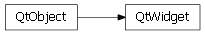

Bases: enaml.core.messenger.Messenger
The base class of all visible widgets in Enaml.
Whether or not the widget is enabled.
Whether or not the widget is visible.
A flag indicating whether or not to show the focus rectangle for the given widget. This is not necessarily support by all widgets on all clients. A value of None indicates to use the default as supplied by the client.
The background color of the widget. Supports CSS3 color strings.
The foreground color of the widget. Supports CSS3 color strings.
The font used for the widget. Supports CSS font formats.
The minimum size for the widget. The default means that the client should determine an intelligent minimum size.
The maximum size for the widget. The default means that the client should determine and inteliigent maximum size.
alias of __NoInterface__

Bases: enaml.qt.qt_object.QtObject
A Qt4 implementation of an Enaml Widget.
Get the QWidgetItem for the underlying widget.
| Returns: | result (QWidgetItem) – The QWidgetItem to use for the underlying widget. |
|---|
Handle the ‘set_minimum_size’ action from the Enaml widget.
Handle the ‘set_maximum_size’ action from the Enaml widget.
Handle the ‘set_show_focus_rect’ action from the Enaml widget.
Sets the minimum size on the underlying widget.
| Parameters: | min_size ((int, int)) – The minimum size allowable for the widget. A value of (-1, -1) indicates the default min size. |
|---|
Sets the maximum size on the underlying widget.
| Parameters: | max_size ((int, int)) – The minimum size allowable for the widget. A value of (-1, -1) indicates the default max size. |
|---|
Set the enabled state on the underlying widget.
| Parameters: | enabled (bool) – Whether or not the widget is enabled. |
|---|
Set the visibility state on the underlying widget.
| Parameters: | visible (bool) – Whether or not the widget is visible. |
|---|
Set the background color on the underlying widget.
| Parameters: | bgcolor (str) – The background color of the widget as a CSS color string. |
|---|
Set the foreground color on the underlying widget.
| Parameters: | fgcolor (str) – The foreground color of the widget as a CSS color string. |
|---|

Bases: enaml.wx.wx_object.WxObject
A Wx implementation of an Enaml WidgetComponent.
Notify the layout system that this widget has changed.
This method should be called when the geometry of the widget has changed and the layout system should update the layout. This will post a wxEvtLayoutRequested event to the parent of this widget.
Handle the ‘set_minimum_size’ action from the Enaml widget.
Handle the ‘set_maximum_size’ action from the Enaml widget.
Handle the ‘set_show_focus_rect’ action from the Enaml widget.
Sets the minimum size on the underlying widget.
| Parameters: | min_size ((int, int)) – The minimum size allowable for the widget. A value of (-1, -1) indicates the default min size. |
|---|
Sets the maximum size on the underlying widget.
| Parameters: | max_size ((int, int)) – The minimum size allowable for the widget. A value of (-1, -1) indicates the default max size. |
|---|
Set the enabled state on the underlying widget.
| Parameters: | enabled (bool) – Whether or not the widget is enabled. |
|---|
Set the visibility state on the underlying widget.
| Parameters: | visible (bool) – Whether or not the widget is visible. |
|---|
Set the background color on the underlying widget.
| Parameters: | bgcolor (str) – The background color of the widget as a CSS color string. |
|---|
Set the foreground color on the underlying widget.
| Parameters: | fgcolor (str) – The foreground color of the widget as a CSS color string. |
|---|